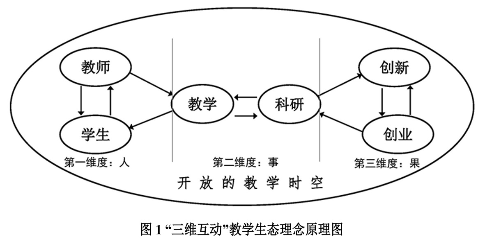
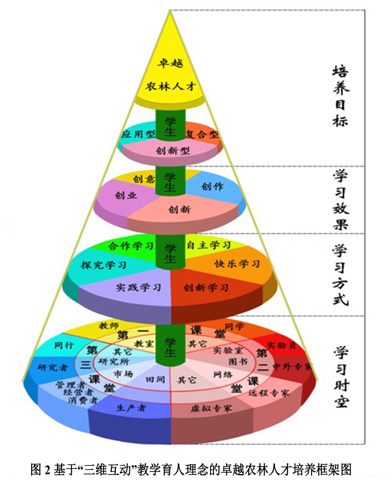

成果简介
人才决定未来、教育成就梦想。习近平（2016.12）要求高校要实现全过程、全员、全方位育人。十九大又提出，实施乡村振兴战略，培养“懂农业、爱农村、爱农民”三农人才。因此，全方位调动教学育人要素，成为新时代高等农业院校的新使命。
在省教育科研项目（2009）、省教改项目（2011）4个项目支持下，自2002年起率先开展“三维互动”教学模式探索，以一门课“教学时空拓展、教学质量提升”为切入点，有机吸收生态学、协同理论等思想，以厘清教学要素和功能关系为突破口，以人（教师与学生）—事（教学与科研）—果（创新与创业）三维度促动、各维度内要素互动为动力（见图1），构建“理论课堂+活动课堂+社会课堂”贯通联动的开放课堂时空，创造人人为“师”、处处有“师”的开放学习环境，以“创意任务”研学驱动、“多维发展”过程评价、“协同共享”团队建设等“三大机制”为保障，形成“人人想学、时时可学、处处能学、人人为师、人人能创”的开放学习生态，拓展形成自主学习、合作学习、探究学习、实践学习、创新学习、快乐学习等“六大学习方式”，使学生在实践中发现自我、增强自信，养成主动学习意识、增强自主发展能力，担当服务社会责任。

“三维互动”教学育人改革，全方位开放课堂时空，全方位调动教学要素，整合各环节育人资源力量，优化了教学育人生态，学生学习态度明显转变、学术创新呈现亮点、创业发展大有作为、服务社会勇于担当，涌现出李娜等一批励志兴农创新典型，黄超等一批立志事农创业典型，马瑞燕连任十二、十三届全国人大代表，关于农业科技教育建议多次被采纳；所在教学团队获山西省教学团队（2009）；植物保护专业入选国家特色专业和卓越农林人才培养计划（2014）；出版《农科创新创业人才培养：“三维互动”教学模式研究与实践》（2017）等论著（文）23部（篇），成果被北大、中国农大、西北农林科大等58所高校借鉴；教学科研互促，获省级教学成果奖5项，主持国家自然基金等30个项目经费累计1057万元；小课堂、大工程，开放共享、以小博大的教学育人效应凸显，自觉率先探索了与国家卓越农林人才培养（图2）和乡村振兴所需“一懂两爱”人才的农科教改革。

|